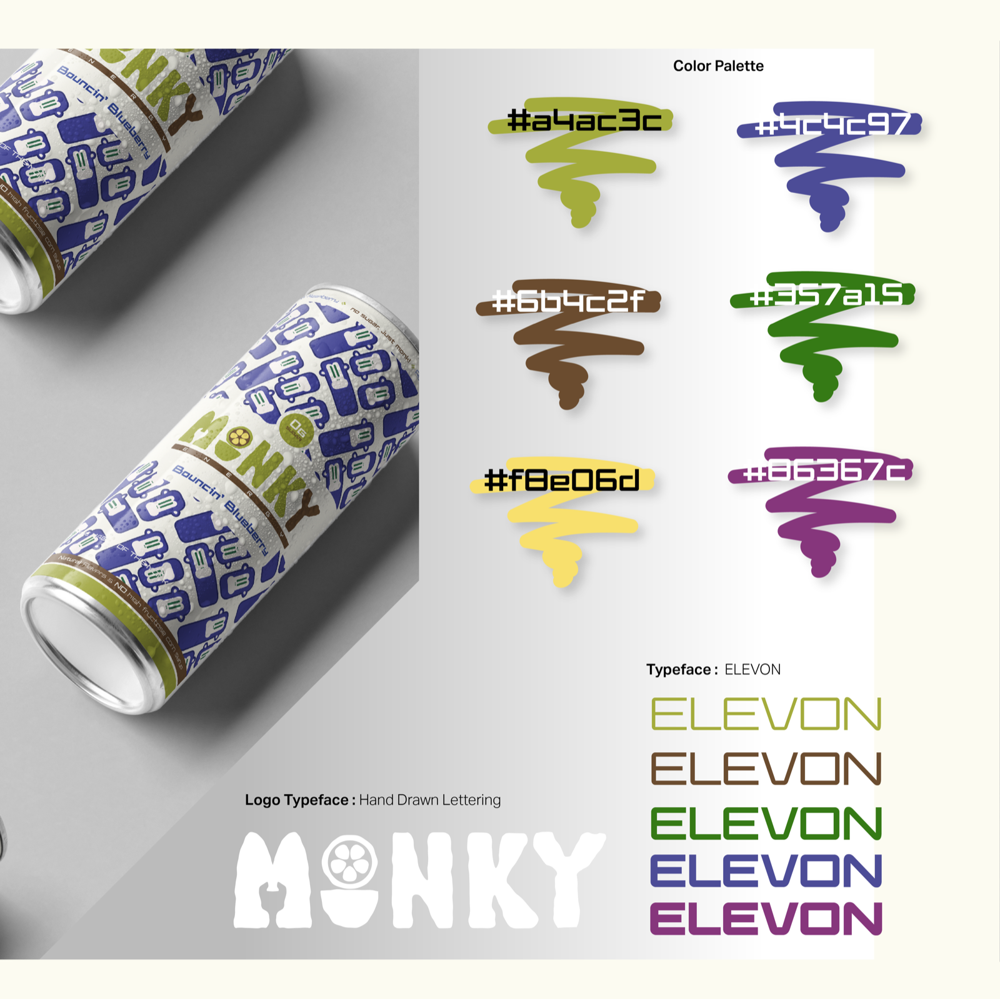
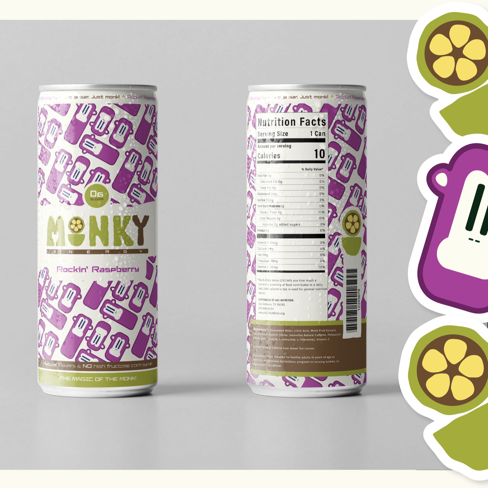
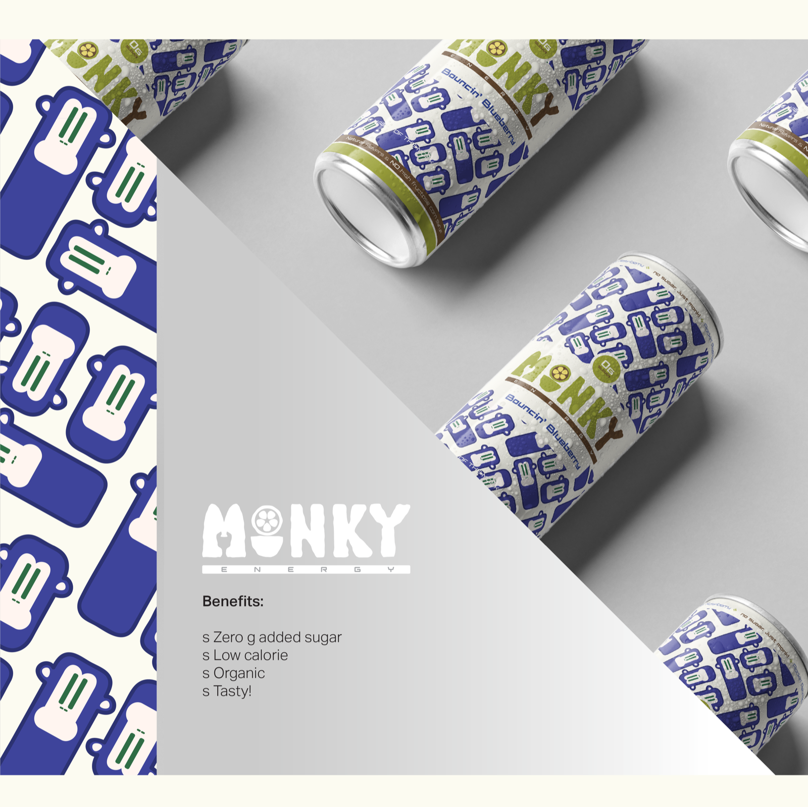
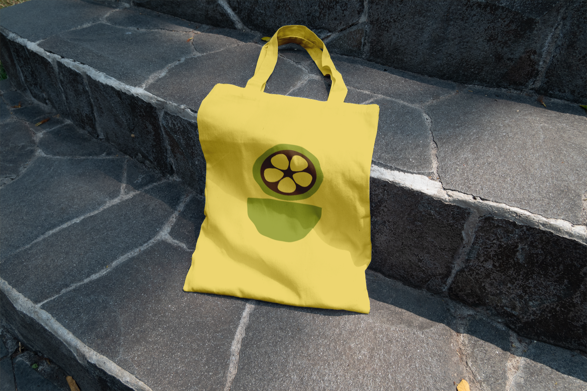

Monky Energy
A brand identity for a healthy energy drink that uses monk fruit as a natural, zero-sugar sweetener.

A full visual identity for Monky Energy — a clean, wellness-focused energy drink built around monk fruit as a natural sweetener. The system spans logo, pattern, packaging, and merchandise, all aimed at a health-conscious market that wants both energy and a better-for-you product.
Concept
Monky positions energy and wellness together — zero added sugar, low calorie, organic, and tasty. The identity needed to feel playful and bold while still reading as clean and health-forward on a crowded shelf.

Identity System
A hand-drawn "MONKY" logotype anchors the brand, paired with a lively monkey-and-bottle pattern, the ELEVON typeface, and a six-color palette that flexes across flavors. The mark stays recognizable whether it's wrapping a can or printed small on a sticker.


Beyond the Can
The mark extends naturally onto merchandise, keeping the brand recognizable in everyday life — like a simple tote that carries the flower icon without needing the full logotype.
